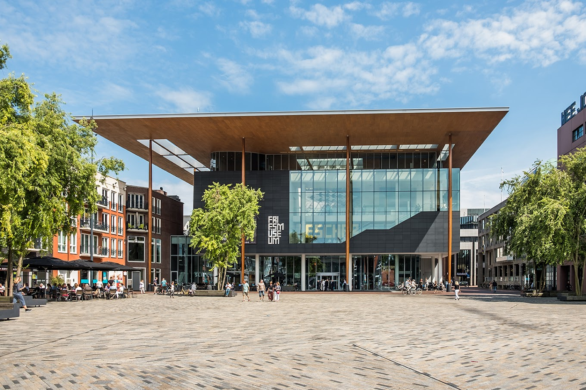
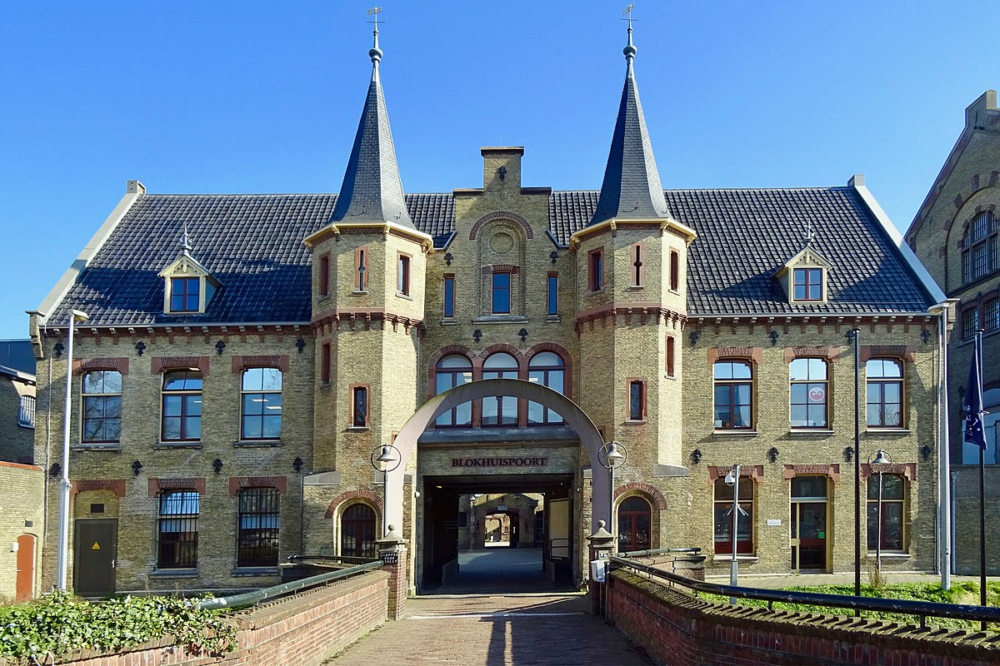

 Vanuit een stevige worteling in de meest herkenbare maar ook meest eigenzinnige regio van Nederland bieden we een venster op de wereld en de wereld een blik op Friesland en de Friezen. Laat je inspireren door de prachtigste kunstwerken van Friese meesters als Sir Lawrence Alma-Tadema, Gerrit Benner en Wybrand de Geest. Laat je meevoeren met de spannende verhalen van Grutte Pier, Mata Hari en de Vikingen en ontdek hoe het opmerkelijke landschap door de jaren heen gevormd is en nog steeds in ontwikkeling is. Er is niet alleen veel te zien, maar ook regelmatig wat te doen. Volg een workshop of rondleiding of kom langs voor een lezing!
 De Blokhuispoort eens in gebruik als gevangenis nu een bruisend cultureel bedrijvencentrum. Waar eens de langgestraften hun arbeid moesten verrichten vindt je nu jonge creatieve ondernemers, dbieb, scholengemeenschappen en velen meer. Ontmoet de creatieve geesten die schuilgaan achter de bedrijven die hier gevestigd zijn. In een inspirerende omgeving werken rond de 100 creatievelingen apart van elkaar maar ook vaak samen. Er worden prachtige producten gemaakt en bijzondere diensten geleverd. Laat u hier alvast informeren door de ondernemers.